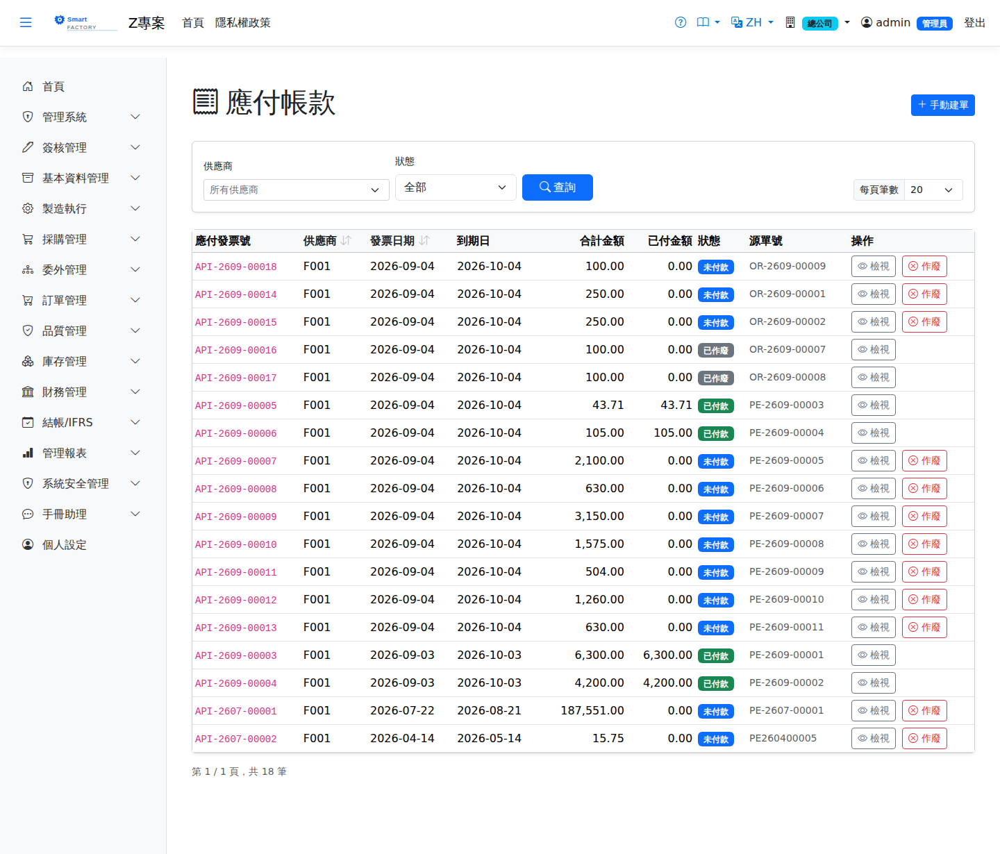

應付帳款AP Invoice
進貨單與委外收貨確認後自動產生應付發票（進貨金額含稅；委外發票以超耗扣款為負項扣減）。非採購性費用可手開發票。發票經付款作業核銷後狀態自動轉部分/全額結清。Confirming a goods receipt or an outsource receipt creates the AP invoice automatically (the receipt amount includes tax; on an outsource invoice the scrap penalty is deducted as a negative line). Non-purchase costs can be invoiced by hand. Once allocated in Payments, the invoice moves to partly or fully paid automatically.

查詢Search
單據狀態Status
| 狀態Status | 說明Guide |
|---|---|
| 未結清 OpenOpen | 尚未收付款或部分沖銷。Not yet paid or received, or only partly settled. |
| 部分沖銷 PartialPaidPartly paid | 已收付部分金額。Part of the amount has been paid or received. |
| 已結清 PaidPaid | 全額沖銷完畢。Fully settled. |
| 已作廢 VoidVoid | 發票作廢，不再列入應收付。The invoice is void and no longer counts as a receivable or payable. |
作業流程Process
手開發票Invoice raised by hand
列印Printing
清單每列的 按鈕（需有列印權限）在新分頁開啟含 QR Code 的列印單，可直接列印或另存 PDF。發票列印含供應商名稱、到期日、幣別與匯率，以及各行品號、品名、數量、單位、單價、金額、稅別與稅額，並印未稅金額、稅額、含稅總額與本幣金額。The button on each row of the list (print permission required) opens a printout with a QR code in a new tab, ready to print or save as PDF. The invoice printout shows the supplier name, due date, currency and exchange rate, and for each line the product code and name, quantity, unit, unit price, amount, tax code and tax, with subtotal, tax, total and local amount.
欄位說明Field reference
表頭Header
| 欄位Field | 說明Guide |
|---|---|
| 應付發票號AP Invoice No. | 系統採番，不可修改Numbered by the system; not editable |
| 供應商Supplier | 應付發票的往來供應商Supplier on the AP invoice |
| 發票日期Invoice Date | 發票開立日，決定入帳期間Invoice date, which decides the accounting period |
| 到期日Due Date | 應付款的期限；帳齡與逾期天數以此起算。由收料／委外收貨自動產生時依廠商主檔的付款條件（結帳日＋收付款天數，見公司/廠商主檔）計算，未設定為單據日＋30 天；手動開立時自行填寫When the payable is due; aging and days overdue are counted from it. When created automatically from a goods receipt / outsource receipt, it is calculated from the supplier's payment terms (closing day + credit days, see Company master); without terms it is document date + 30 days. Entered by hand on manual invoices |
| 狀態Status | 未結清／部分結清／已結清；由付款單核銷後自動更新Open / partly paid / paid; updated automatically once a payment is allocated |
| 總金額Total amount | 發票的交易幣別含稅總額Total including tax in the invoice's transaction currency |
| 已付金額Paid Amount | 累計已被付款單核銷的金額，不可手動修改Cumulative amount allocated by payments; not editable |
| 本幣金額Local Amount | 總金額換算為本位幣的金額，帳務入帳與帳齡分析採此欄The total converted to local currency; the ledger and the aging analysis both use this column |
明細Lines
| 欄位Field | 說明Guide |
|---|---|
| 序號Seq | 明細行序Line seq |
| 品號Item | 進貨的料件Item received |
| 數量 / 單價Qty / Unit price | 進貨數量與未稅單價Received quantity and unit price excluding tax |
| 金額Amount | 數量 × 單價，未稅金額Quantity × unit price, excluding tax |
| 稅額Tax | 依稅別稅率計算的稅額Tax calculated from the rate of the tax code |
應付發票由進貨作業自動產生，明細對應進貨單的內容；金額不符時應回頭檢查進貨單而非直接改發票。AP invoices are created automatically by goods receipt and their lines mirror the receipt; if the amount looks wrong, go back and check the receipt rather than editing the invoice.
相關畫面Related screens
付款作業AP Payment、應付帳齡分析AP Aging、進貨單Goods Receipt